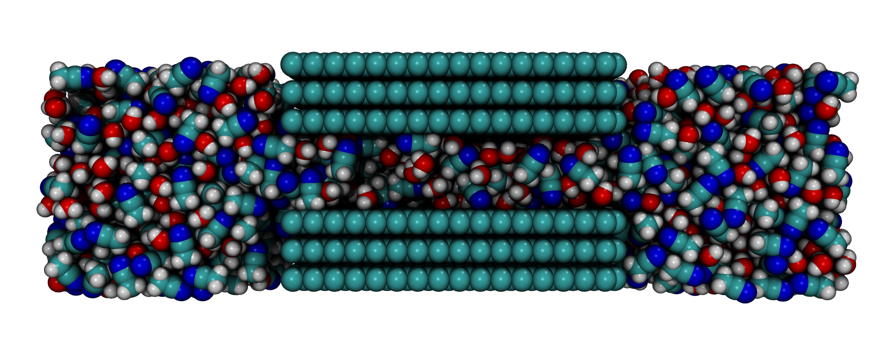
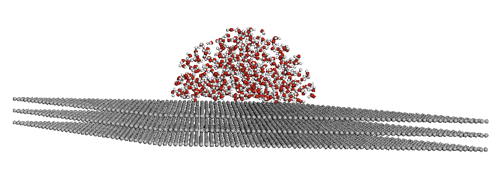
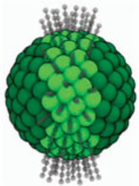
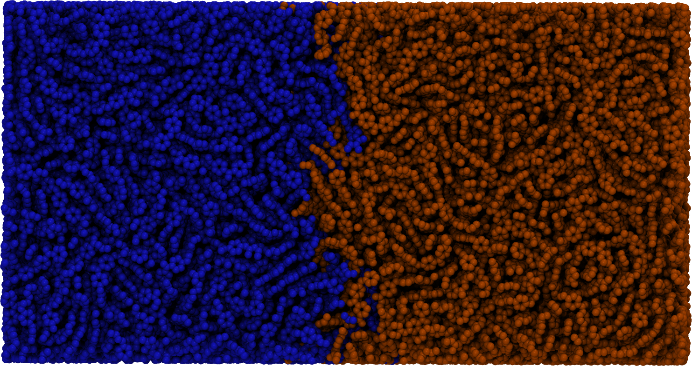

Accessing Recipes Made in mBuild
These recipes have been developed and published using versions of mBuild related to the time of publication. Please refer to their associated publications or environment.yml for the exact version.
(1)
Graphene Slit Pore:
A slit-pore comprised of two graphene sheets seperated by a small slit and filled with
liquid molecules both in the pore and two resevoirs on either side.
>
(2)
Droplet on Graphene:
Defaults to a graphene sheet, but any substrate can be used, and a droplet of
various radius, contact angle, and molecules can be generated on that substrate.

(3)
Coarse Grained DNA:
Generate nucleic acid representations that are broken into coarse-grained beads.
(4)
Lipids:
Generate phospholipid molecules of variable size and composure.
(5)
Bilayers:
Take molecules and align them to form pre-assembled monolayers and bilayers, setup primarily for lipid bilayers.
(6)
Grafted Nanoparticles:
Coat a silica nanoparticle of variable radius with alkyl chains in specific regions of the particle.

(7)
Monolayer Coatings:
Generate monolayers and bilayers on amorphous or crystalline materials by placing coated chains
spread across the surface at available bonding sites based on the given bonding logic.
(8)
Protein Builder:
Build amino acid molecules from repeat and nonrepeated residue sequences.
(9)
FlowerMD: Coarse Grained Polymer Simulations
A fully composed pipeline for developing and performing simulation workflows. Primary examples include surface wetting and polymer welding types of simulations for organic and polymeric systems.

(10)
GRiTS: Coarse Grained Mapper
A set of tools for converting mBuild structures from
atomistic to coarse-grained systems, as well as reverse mapping a coarse-grained system to an atomistic one.
(11)
Collagen-like Peptide Model
mBuild implementation of the Collagen-like Peptide (CLP) model using coarse grained representations. This improved model particularly improves upon hydrogen bond interactions and better predicts CLP melting trends.
(12)
HFCs
An example project screening hydrofluorocarbon (HFCs) and ammonium perchlorate for vapor-liquid equilibrium simulations and subsequent training a machine learning optimized force field.